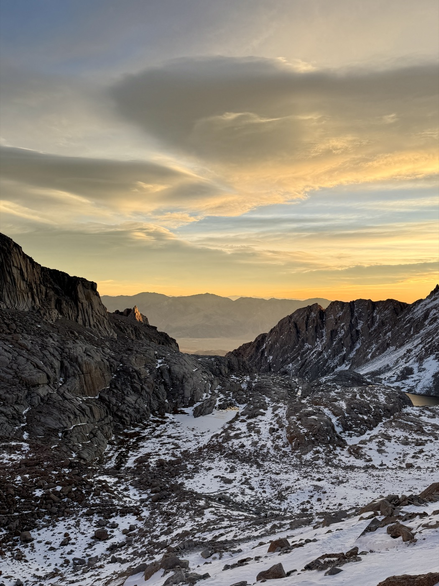

A month ago on Sunday October 26th, I returned to my Stanford dorm after an eight hour drive back from Mount Whitney. I had quite literally just set my pack down in front of my door to take out my keys when my friend ambushed me. I was exhausted and still a little high on adrenaline—just 30 hours ago, I had just summited the tallest mountain in the contiguous United States (4,421 m / 14,506 ft)—but I was catapulted back into reality. I spent that entire night debriefing with my friends, who were so incredibly worried for me.
Rewind to Friday. As soon as we wrapped up morning classes, we drove down from Stanford to Whitney Portal Campground. We got there very late and took a quick nap before starting our ascent before 02:00 the next day. The first five hours of climbing in the dark were a blur; I was waning in and out of consciousness. The 2.5 hour nap and the 3 hours of sleep I got the two nights before, were definitely not helping, were really coming into effect.
The 6 of us started with the clear expectation of not summiting. We had discussed extensively with professionals and knew full well that the weather that day was extreme. Full winter conditions were incredibly dangerous and almost all groups had turned back. But by the time we reached the infamous 99 Switchbacks, summit fever had set in, and there was no stopping.

We somehow reached the summit by 11:00. My body was rioting—distraught from the lack of sleep (this, I have come to know, is one of the worst feelings ever). I kept telling myself, this was type 2 fun! But the thought that this might be type 3 pervaded as well.
In mountaineering, the descent is the most dangerous. You're fatigued, depleted of adrenaline, and maybe a bit complacent. The worst part hadn't even begun. Our descent was marked by trudging through dangerously loose snow or fighting violent winds on the ridgeline.
We made it maybe halfway down the 99 Switchbacks when one of my friends suddenly slipped. The winds had contoured two powdery switchbacks, leading to a straight drop. He kept falling and I closed my eyes out of fear. When I opened my eyes again, I saw that he had miraculously stopped before a bigger cliff. Whatever remaining adrenaline I had in me surely kicked in, because the next thing I knew, I started slipping as well. I felt utterly terrified.
All 6 of us ended up being okay. We were incredibly lucky. But as we slowly turned the switchback, relief transformed into solemnity. We found a climber who had fallen to his death from the exact spot. We split up our group for some to stay behind to contact SAR.
We didn't reach the campground until 22:00 and by that point, I was at war with my body to not fall asleep. I also vomited for the first time in 20 years of being alive, a reminder of not properly acclimatizing.
Now, a month later, I still don't know if I would characterize Mount Whitney as type 2 or type 3 fun. This 20-hour monster of a "day hike" was the most psychologically challenging experience I've had recreating outdoors.
This made me think. After all that, why am I still drawn to mountains?
As perilous as it sounds, I think it has something to do with the fact that mountains don't offer a promise of return. In other words, there's uncertainty and opportunities to take measured risks without necessarily flirting with death. Climbing allows me to momentarily live without dilution. When you've climbed above the clouds, the world becomes simple again. Not easy, simple. The only things on my mind are my next steps, my breathing, the weather, and a healthy amount of fear.
In the quotidien, I find my identity suspended in a superposition of distractions, obligations, and ambitions. In this way, stakes tend to blur and consequences tend to soften. On a mountain, there is a unique compression where every part of you collapses into the present moment.
I reflect on all this as I just spontaneously bought a flight to Ecuador. In two weeks, I'll be attempting to summit the Triple Crown: Cayambe (5,790 m / 19,000 ft), Cotopaxi (5,897 m / 19,351 ft), and Chimborazo (6,263 m / 20,549 ft).